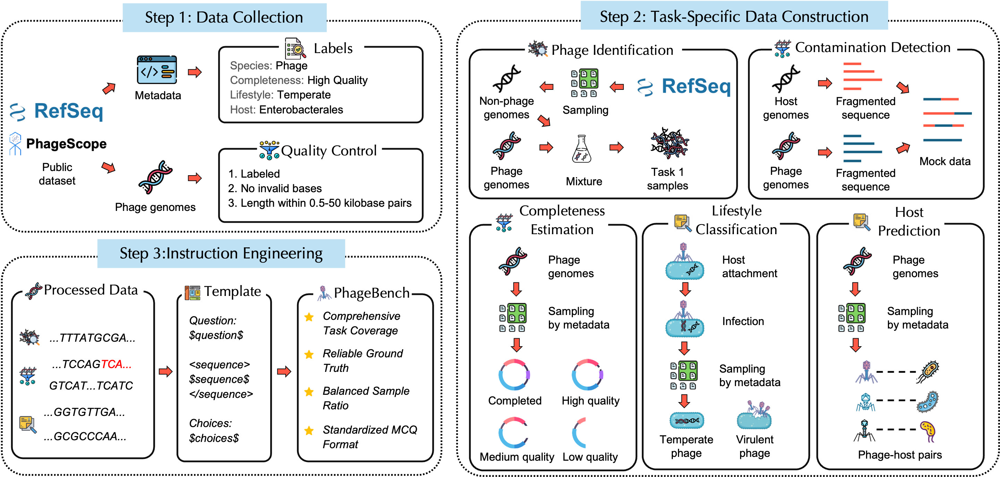
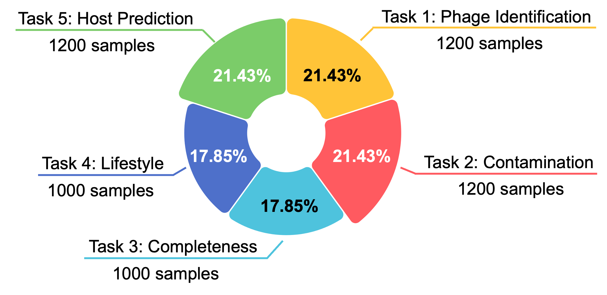

Abstract
Bacteriophages, often referred to as the dark matter of the biosphere, play a critical role in regulating microbial ecosystems and in antibiotic alternatives. Thus, accurate interpretation of their genomes holds significant scientific and practical value. While general-purpose Large Language Models (LLMs) excel at understanding biological texts, their ability to directly interpret raw nucleotide sequences and perform biological reasoning remains underexplored.
To address this, we introduce PhageBench, the first benchmark designed to evaluate phage genome understanding by mirroring the workflow of bioinformatics experts. The dataset contains 5,600 high-quality samples covering five core tasks across three stages: Screening, Quality Control, and Phenotype Annotation. Our evaluation of eight LLMs reveals that general-purpose reasoning models significantly outperform random baselines in phage contig identification and host prediction, demonstrating promising potential for genomic understanding. However, they exhibit significant limitations in complex reasoning tasks involving long-range dependencies and fine-grained functional localization. These findings highlight the necessity of developing next-generation models with enhanced reasoning capabilities for biological sequences.
Why Phages? The Ideal Testbed
The intersection of AI and biology is shifting from text analysis to direct genomic decoding. While specialized Genomic Foundation Models (GFMs) require massive pre-training on DNA, PhageBench investigates whether general-purpose LLMs can leverage their inherent reasoning to interpret raw genomes zero-shot. We propose bacteriophages as the ideal testbed for three reasons:
Perfect Scale
Phage genomes (typically 3–150 kb) align well with the context windows of modern LLMs, making them ideal for non-natural-language long-context reasoning.
Linguistic Structure
Unlike complex eukaryotic genomes, phages exhibit a dense, linear syntax similar to natural language, enabling reasoning-based functional prediction even when sequence homology is low.
Scientific Impact
As the dark matter of the biosphere, accurate phage annotation is critical for scientific discovery, food engineering, and phage therapy as an alternative to antibiotics.
Benchmark Construction
PhageBench is built through a rigorous three-stage pipeline. We collect high-confidence phage genomes from authoritative databases (RefSeq, PhageScope), construct task-specific samples by controlled sampling and mixing, and engineer standardized multiple-choice instructions that ensure reliable parsing and evaluation.

Every sample is standardized to a single schema — an id, a
natural-language question, the raw DNA sequence,
multiple-choice choices, the ground-truth answer, and
rich metadata (sequence length, GC content, source, completeness,
and more) — so that any LLM can be evaluated through a uniform interface.
Dataset & Tasks
PhageBench contains 5,600 samples spanning five core tasks, grouped into the three stages of a real bioinformatics annotation workflow. Sequences range from 0.5 kb to 50 kb with a balanced answer distribution to discourage shortcut guessing.

“Is the following nucleotide sequence derived from a bacteriophage genome?” — distinguishing phages from environmental noise such as bacteria and plasmids.
“Does the following contig contain any DNA originating from a non-phage host genome?” — identifying host signals and mis-binning.
“What is the estimated genome completeness category of the following bacteriophage sequence?” — assessing genome integrity from sequence structure.
“What is the lifestyle of the phage represented by the following genome sequence?” — virulent vs. temperate.
“Which host family is the following phage most likely to infect?” — predicting host range from genomic signals.
Results
Model accuracy (%) on PhageBench under the zero-shot Chain-of-Thought (CoT) setting. Bold marks the best per column; underline marks the second best. Avg. is the mean across all five tasks.
| Model | T1 Identification |
T2 Contamination |
T3 Completeness |
T4 Lifestyle |
T5 Host Pred. |
Avg. |
|---|---|---|---|---|---|---|
| Non-reasoning | ||||||
| GPT-4o-mini | 50.00 | 50.08 | 24.50 | 48.40 | 27.75 | 40.15 |
| LLaMA 4 | 53.25 | 49.58 | 27.10 | 54.50 | 28.58 | 42.60 |
| Qwen3-235b | 51.58 | 49.33 | 25.40 | 52.00 | 28.58 | 41.38 |
| Reasoning | ||||||
| GPT-OSS-120b | 50.08 | 46.58 | 24.20 | 49.50 | 41.00 | 42.27 |
| GPT-5.2 | 70.75 | 54.17 | 43.10 | 51.50 | 35.25 | 50.95 |
| Gemini-3-flash | 70.83 | 58.83 | 32.10 | 57.40 | 62.50 | 56.33 |
| Claude-sonnet-4.5 | 57.92 | 51.83 | 35.50 | 50.00 | 44.17 | 47.88 |
| Qwen3-max | 57.42 | 52.58 | 33.80 | 49.90 | 34.75 | 45.69 |
| Baseline | ||||||
| Random | 50.00 | 50.00 | 25.00 | 50.00 | 25.00 | 40.00 |
Key Findings
- Reasoning helps — but only so far. Reasoning models clearly beat non-reasoning models and the random baseline, yet even the best model (Gemini-3-flash, 56.33% average) is far from reliable on raw-genome understanding.
- Some signal is recoverable from raw DNA. On phage contig identification (T1) and host prediction (T5), top models substantially exceed the random baseline, showing genuine promise for genomic reasoning.
- Completeness estimation is the hardest. Most models hover near or below the random 25% on T3, exposing weakness at long-range dependencies and fine-grained functional localization.
- A clear call to action. The gap motivates next-generation models with stronger reasoning capabilities tailored to biological sequences.
BibTeX
@article{hou2026phagebench,
title={PhageBench: Can LLMs Understand Raw Bacteriophage Genomes?},
author={Hou, Yusen and Long, Weicai and Hu, Haitao and Su, Houcheng and Feng, Junning and Zhang, Yanlin},
journal={arXiv preprint arXiv:2604.05775},
year={2026}
}